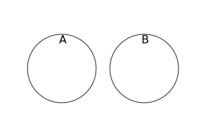

Set.prototype.isDisjointFrom()
Baseline 2024
Newly available
Since June 2024, this feature works across the latest devices and browser versions. This feature might not work in older devices or browsers.
The isDisjointFrom() method of Set instances takes a set and returns a boolean indicating if this set has no elements in common with the given set.
Syntax
isDisjointFrom(other)
Parameters
Return value
true if this set has no elements in common with the other set, and false otherwise.
Description
Two sets are disjoint if they have no elements in common. In mathematical notation:
And using Venn diagram:

isDisjointFrom() accepts set-like objects as the other parameter. It requires this to be an actual Set instance, because it directly retrieves the underlying data stored in this without invoking any user code. Then, its behavior depends on the sizes of this and other:
- If there are more elements in
thisthanother.size, then it iterates overotherby calling itskeys()method, and if any element inotheris present inthis, it returnsfalse(and closes thekeys()iterator by calling itsreturn()method). Otherwise, it returnstrue. - Otherwise, it iterates over the elements in
this, and returnsfalseif any elementeinthiscausesother.has(e)to return a truthy value. Otherwise, it returnstrue.
Because of this implementation, the efficiency of isDisjointFrom() mostly depends on the size of the smaller set between this and other (assuming sets can be accessed in sublinear time).
Examples
Using isDisjointFrom()
The set of perfect squares (<20) is disjoint from the set of prime numbers (<20), because a perfect square is by definition decomposable into the product of two integers, while 1 is also not considered a prime number:
const primes = new Set([2, 3, 5, 7, 11, 13, 17, 19]);
const squares = new Set([1, 4, 9, 16]);
console.log(primes.isDisjointFrom(squares)); // true
The set of perfect squares (<20) is not disjoint from the set of composite numbers (<20), because all non-1 perfect squares are by definition composite numbers:
const composites = new Set([4, 6, 8, 9, 10, 12, 14, 15, 16, 18]);
const squares = new Set([1, 4, 9, 16]);
console.log(composites.isDisjointFrom(squares)); // false
Specifications
| Specification |
|---|
| Set methods # sec-set.prototype.isdisjointfrom |
Browser compatibility
BCD tables only load in the browser